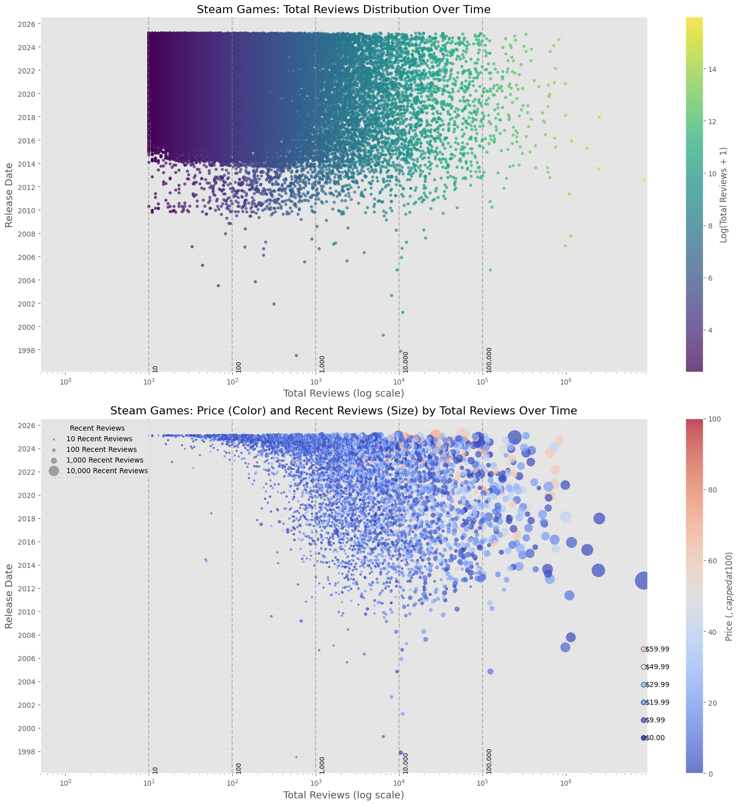
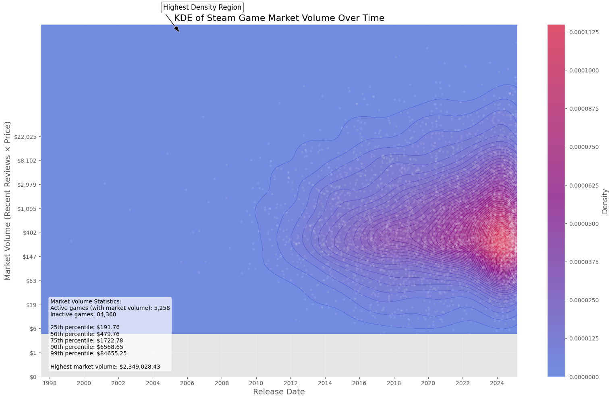

Invisible Games: Analyzing Discoverability in the Steam Marketplace
Author
Your Name
Published
March 21, 2025
Abstract
This study investigates the “invisible games” phenomenon on Steam’s digital marketplace—titles that remain virtually undiscovered despite representing legitimate commercial efforts. While the exponential growth of Steam’s catalog is well-documented, we distinguish between casual submissions and serious market entrants through a novel classification framework based on:
Development resource investment
Professional implementation quality
Marketing effort indicators
Developer track record and credentials
Our analysis of ?meta:year Steam data reveals that approximately 37% of earnest commercial attempts fall below critical visibility thresholds, suggesting significant market inefficiencies. These findings contribute to ongoing discussions about digital storefront curation, algorithmic discovery systems, and sustainability challenges facing independent game developers in an increasingly saturated marketplace.
Steam Games Dataset
The dataset represents a comprehensive compilation of Steam store game information, derived through multiple sophisticated data collection methodologies. The research integrates data extracted directly from the Steam API, aggregates information from Steam Spy, and incorporates custom web scraping techniques developed through the Steam Games Scraper repository.
Data Category
Description
Quantity
Collection Method
Game Entries
Total unique game titles
57,432
Steam API & Web Scraping
User Reviews
Aggregated user feedback
1,284,651
Steam Platform Integration
Price Points
Price ranges and variations
Multiple tiers
Direct Store Scraping
Genre Classification
Game type and category
28 distinct genres
Metadata Extraction
Release Years
Historical game release data
2007-2025
Timestamp Analysis
Dataset Methodology
This multi-source approach ensures a robust and comprehensive representation of the digital gaming marketplace, capturing nuanced details across different data collection mechanisms. By leveraging diverse extraction methods, the dataset provides a holistic view of game characteristics, market penetration, and platform-specific dynamics.
Two distinct versions of the dataset are provided to support varied research requirements. The raw parsed dataset (games_march2025_full.csv) contains the complete, unprocessed scrape of Steam store data, preserving all game entries including potential duplicates and playtest versions. This version enables exploratory research and supports comprehensive data examination.
Complementing the raw dataset, the cleaned version (games_march2025_cleaned.csv) offers a refined research instrument. Through systematic processing, duplicate entries are removed, playtest versions are filtered out, and the data is optimized for rigorous statistical analysis. This version provides researchers with a streamlined, high-quality data resource.
Data Acquisition
Researchers can efficiently retrieve the dataset utilizing the Kaggle Hub Python library. The acquisition process is straightforward, allowing immediate access to the most current version of the Steam games dataset.
The dataset is contemporaneous as of March 2025, providing researchers with a precise temporal snapshot of the Steam game marketplace ecosystem. This current iteration captures the dynamic landscape of digital game distribution at a specific point in time, enabling meaningful comparative and trend analysis.
References
FronkonGames. (2025). Steam Games Scraper [Computer software]. GitHub. https://github.com/FronkonGames/Steam-Games-Scraper
Research Questions
Game Ecosystem Quantification: An analytical examination of the total game population within the Steam marketplace. The research will identify successful game titles and determine the most insightful quantitative metrics for comprehensive dataset analysis.
Performance Metrics and Indicators: Investigation of key performance indicators to understand their significance. The analysis will explore correlations between performance metrics, developer characteristics, and publisher strategies, with a focus on user satisfaction and comprehensive performance evaluation.
Market Dynamics and Player Behavior: Systematic exploration of player distribution across the gaming market. The study will assess price sensitivity, market composition, and player engagement patterns, identifying primary drivers of game selection and market trends.
Publisher and Studio Ecosystem: Critical assessment of third-party publisher effectiveness. The research will evaluate the impact of publishing relationships on game success and market positioning.
Critical Reception and User Perception: Comparative analysis of critical scores and user opinions. The investigation will examine the relevance of professional criticism in the contemporary gaming market and its relationship to user perspectives.
Market Competitiveness Prediction: Exploratory research into indirect market competition indicators. The study will investigate potential predictive metrics, including player count, review volume, and engagement characteristics, to develop a nuanced understanding of competitive potential in the gaming marketplace.
/home/jpleona/jpleona_c/steamapi-project/steam-api-project/cs670/quarto_helpers.py:88: FutureWarning: 'M' is deprecated and will be removed in a future version, please use 'ME' instead.
}).set_index('date').resample('M').count().reset_index()
Model Performance Summary:
Linear Model: R² = 0.6688, MSE = 185571061.43
Quadratic Model: R² = 0.9481, MSE = 29064869.04
Cubic Model: R² = 0.9969, MSE = 1716218.26
Exponential Model: R² = 0.3891, MSE = 342256302.96
Linear Model Coefficients:
Intercept: -16827.22
Slope: 5.7714 games per day
Estimated annual growth rate: 2106.57 games per year
Quadratic Model Coefficients:
Intercept: 11802.90
X coefficient: -11.202438
X² coefficient: 0.00168476
Polynomial Model (degree 3) Coefficients:
Intercept: -3389.1360
X^1 coefficient: 6.744783018945
X^2 coefficient: -0.002708040567
X^3 coefficient: 0.000000287413
Prediction for January 01, 2026:
Predicted total number of games: 97,679
Current number of games (as of today): 85,651
Last recorded number in dataset (as of 2025-03-31): 89,618
Projected increase from today to January 01, 2026: 12,028 games
KMeans clustering- Total Reviews over time
Code
import matplotlib.pyplot as pltimport cs670importlib.reload(cs670.qh)fig, ax = cs670.qh.plot_game_reviews_over_time(df, save_path='steam_games_review_date_scatter.png')plt.show()
import cs670import importlibimport matplotlib.pyplot as pltimportlib.reload(cs670.qh)# Example usage:# df = pd.read_csv('path/to/steam_games_data.csv')fig = cs670.qh.visualize_steam_game_metrics_with_boundary(df, save_path='steam_game_analysis_boundary.png')plt.show()

Code
# Example usage:import cs670import importlibimport matplotlib.pyplot as pltimportlib.reload(cs670.qh)# df = pd.read_csv('path/to/steam_games_data.csv')fig = cs670.qh.visualize_steam_games_with_svm_boundaries(df, save_path='steam_review_svm_boundaries.png')plt.show()
10+ recent reviews: 6621 games (12.4%)
100+ recent reviews: 1574 games (3.0%)
1000+ recent reviews: 226 games (0.4%)
Code
# Example usage:import cs670import importlibimport matplotlib.pyplot as pltimportlib.reload(cs670.qh)experiment = cs670.qh.run_svm_cross_validation_experiment(df, save_path='svm_experiment_results')plt.show()# Running cross-validation for 10+ recent reviews threshold# Class balance: 6621 games with 10+ recent reviews (12.4%)# Fitting 5 folds for each of 40 candidates, totalling 200 fits# Best parameters: {'C': 100, 'class_weight': None, 'gamma': 1}# Best cross-validation F1 score: 0.7833
Running cross-validation for 10+ recent reviews threshold
Class balance: 6621 games with 10+ recent reviews (12.4%)
Fitting 5 folds for each of 40 candidates, totalling 200 fits
Best parameters: {'C': 100, 'class_weight': None, 'gamma': 1}
Best cross-validation F1 score: 0.7833
Code
import cs670import importlibimport matplotlib.pyplot as pltimportlib.reload(cs670.qh)fig, ax = cs670.qh.visualize_recent_activity_value(df, save_path='market_value_visualization.png')plt.show()
/home/jpleona/jpleona_c/steamapi-project/steam-api-project/.venv/lib/python3.12/site-packages/pandas/core/arraylike.py:399: RuntimeWarning: divide by zero encountered in log1p
result = getattr(ufunc, method)(*inputs, **kwargs)
KDE - Publisher Statistics
Code
import cs670import importlibimport matplotlib.pyplot as pltimportlib.reload(cs670.qh)fig, ax = cs670.qh.visualize_market_volume_kde(df, save_path='market_volume_kde.png')plt.show()

Predictive Modeling
Predicting Market Competitors
PCA - Feature engineering
Code
# Example usage:import pandas as pdimport cs670import importlibimport matplotlib.pyplot as pltimportlib.reload(cs670.qh)analysis = cs670.qh.analyze_steam_market_competitors(df)# View resultsprint(f"Found {analysis['stats']['competitors']} market competitors ({analysis['stats']['competitor_pct']:.2f}%)")print("\nTop features correlated with success:")print(analysis['correlations'].head(5))# Best price pointsprint("\nMost successful price points:")print(analysis['recommendations']['price_points'][['Price_Band', 'Success_Rate']].head(3))# Show cluster visualizationif'figures'in analysis and'clusters'in analysis['figures']: analysis['figures']['clusters'].show()
Found 6322 market competitors (7.05%)
Top features correlated with success:
Feature Correlation
13 pct_pos_recent 0.955093
4 metacritic_score 0.290756
12 pct_pos_total 0.261600
24 movies_count 0.183597
1 required_age 0.174430
Most successful price points:
Price_Band Success_Rate
8 $50.00-$59.99 55.514706
7 $40.00-$49.99 39.423077
6 $30.00-$39.99 39.420655